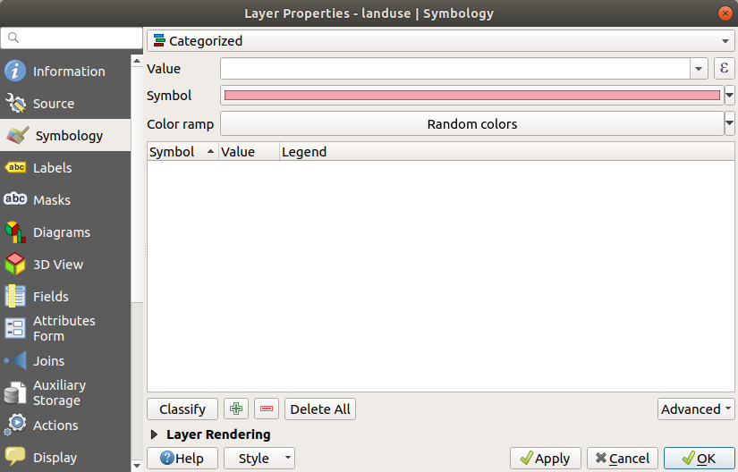
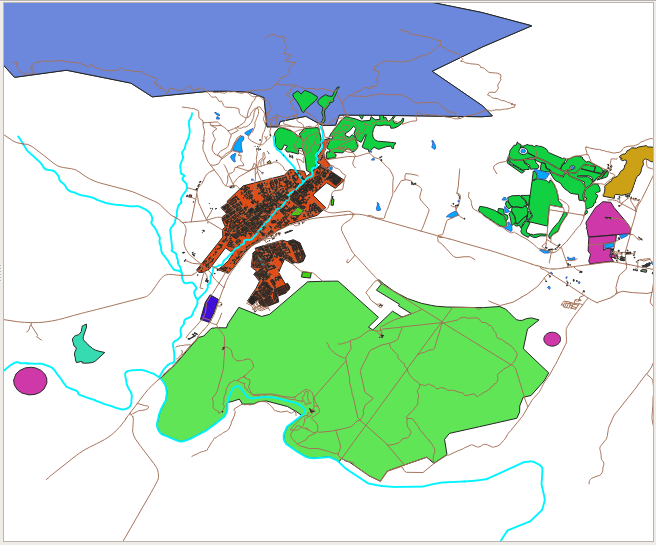
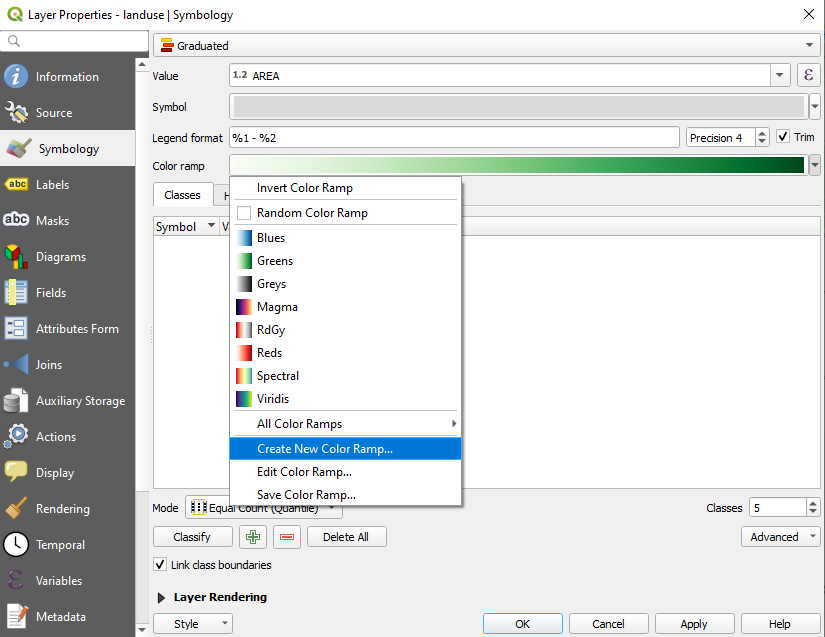
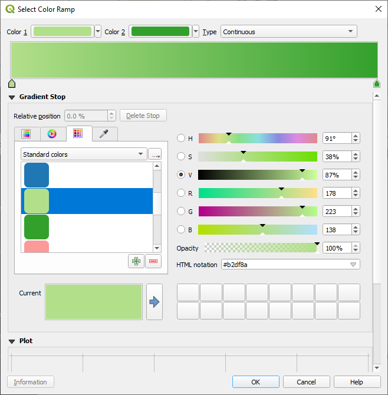
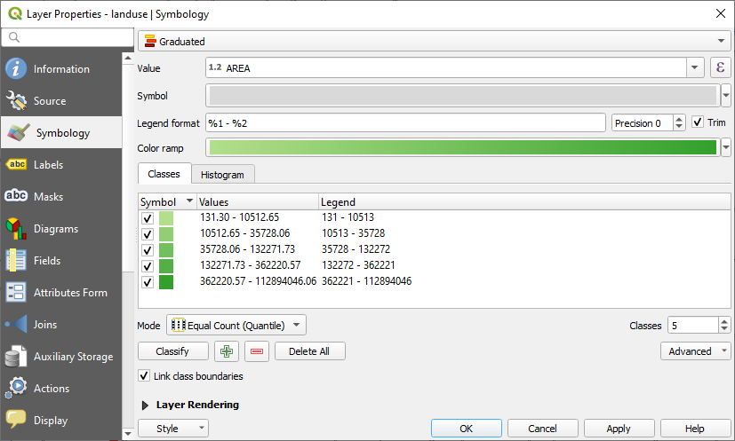
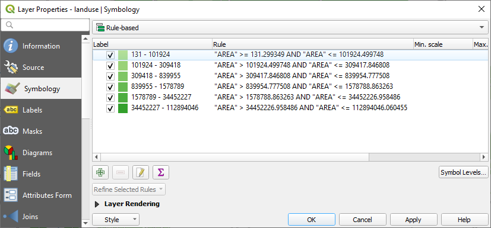
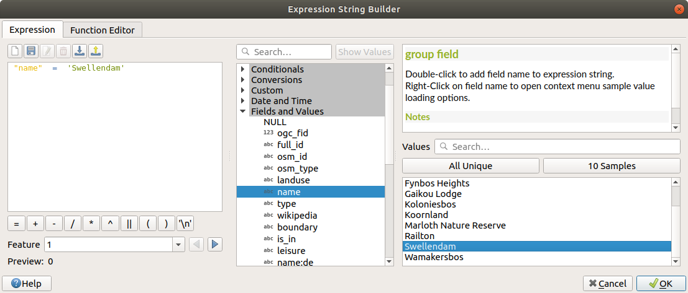

3.3. သင်ခန်းစာ- အတန်းအစားခွဲခြားခြင်း (Lesson: Classification)
Label များသည် သီးခြားနေရာများ၏အမည်များကဲ့သို့ အချက်အလက်များအတွက် ကောင်းမွန်ပါသော်လည်း အရာရာတိုင်းအတွက် အသုံးမပြုနိုင်ပါ။ ဥပမာ၊ landuse ဧရိယာတစ်ခုချင်းစီသည် ဘာအတွက်အသုံးပြုသလဲဆိုသည်ကို သိချင်လျှင် Label များအသုံးပြုပြီး သိနိုင်ပါသည်-

မြေပုံပေါ်ရှိ label များသည် ဖတ်ရှုရန် ခက်ခဲနေပြီး မြေပုံပေါ်တွင် များစွာသော landuse ဧရိယာအမျိုးမျိုးရှိနေလျှင် label များထပ်နေစေပါသည်။
ဤသင်ခန်းစာအတွက် ရည်မှန်းချက်- Vector data များကို ထိရောက်မှုရှိရှိ အတန်းအစားခွဲခြားတတ်စေရန်။
3.3.1. ★☆☆ လိုက်လုပ်ကြည့်ပါ- Nominal Data များကို အတန်းအစားခွဲခြားခြင်း (Follow Along: Classifying Nominal Data)
landuselayer အတွက် Layer Properties dialog ကိုဖွင့်ပါSymbology tab သို့သွားပါ
Single Symbol ဟုပေါ်နေသော dropdown ကိုနှိပ်ပြီး Categorized သို့ပြောင်းပါ-
 Panel အသစ်ထဲတွင် Value ကို
landuseဟုပြောင်းပြီး Color ramp ကို Random colors ပြောင်းပါClassify ခလုတ်ကိုနှိပ်ပါ

OK ကိုနှိပ်ပါ
အောက်ပါပုံစံအတိုင်း တွေ့ရပါလိမ့်မည်-
 Layers panel ထဲရှိ
landuse၏ဘေးတွင်ရှိသော မြား (သို့မဟုတ် အပေါင်းလက္ခဏာ) ကိုနှိပ်ပါ၊ အောက်ပါအတိုင်း category (အမျိုးအစား) များကို တွေ့ရပါလိမ့်မည်-
Landuse polygon များကို အရောင်ဖြည့်ထားပြီး အတန်းအစားခွဲခြားထားပါသည်၊ ထို့ကြောင့် landuse တူညီသော ဧရိယာများသည် အရောင်အတူတူဖြစ်နေပါသည်။
Layers panel သို့မဟုတ် Layer Properties dialog ထဲတွင် အရောင်အကွက်ကို click နှစ်ချက်နှိပ်ပြီး landuse ဧရိယာတစ်ခုချင်းစီ၏ သင်္ကေတကို ပြောင်းလဲနိုင်ပါသည်-

ဗလာ (empty) ဖြစ်နေသော category (အမျိုးအစား) တစ်ခုရှိနေပါသည်-

ဗလာဖြစ်နေသော category သည် landuse တန်ဖိုးမသတ်မှတ်ထားသော သို့မဟုတ် NULL တန်ဖိုးရှိသော မည်သည့်အရာကိုမဆို အရောင်ခြယ်ရန် အသုံးပြုပါသည်။ ဗလာဖြစ်နေသော category ကိုဆက်လက်ထားရှိခြင်းသည် NULL တန်ဖိုးရှိသော ဧရိယာများကို မြေပုံပေါ်တွင်ဖော်ပြရာတွင် အသုံးဝင်ပါသည်။ ဗလာ သို့မဟုတ် NULL တန်ဖိုးကို သိသာစွာ ပြသလိုလျှင် အရောင်ပြောင်းလဲနိုင်ပါသည်။
လုပ်ဆောင်ထားသည့် ပြောင်းလဲမှုများမပျက်သွားစေရန် မြေပုံကို သိမ်းဆည်းရန် မမေ့ပါနှင့်၊
3.3.2. ★☆☆ မိမိကိုယ်တိုင်ကြိုးစားကြည့်ပါ- နောက်ထပ် အတန်းအစားခွဲခြားခြင်း (Try Yourself: More Classification)
အထက်တွင် လေ့လာခဲ့သည့်အတိုင်း buildings layer ကို အတန်းအစားခွဲခြားပါ။ building field ပေါ်မူတည်ပြီး category ခွဲကာ Spectral အရောင်စဉ်တန်း ကိုအသုံးပြုပါ။
Note
ရလာဒ်ကို မြင်နိုင်ရန် Urban ဧရိယာကို zoom ချဲ့ကြည့်ပါ
3.3.3. ★★☆ လုပ်လိုက်ကြည့်ပါ- Ratio Classification (Follow Along: Ratio Classification)
Classification (အတန်းအစားခွဲခြားခြင်း) အမျိုးအစား ၄ မျိုးရှိပါသည်- nominal ၊ ordinal ၊ interval နှင့် ratio တို့ဖြစ်ပါသည်။
nominal classification တွင် object များကို အတန်းအစားခွဲသည့် category များသည် (name-based) အမည်ကိုအခြေခံပြီး order (အစဉ်) မရှိပါ။ ဥပမာ- မြို့အမည်များ၊ ခရိုင် code များ၊ အစရှိသည်တို့ဖြစ်သည်။ Nominal data များအတွက် အသုံးပြုသော သင်္ကေတများသည် order သို့မဟုတ် magnitude များကို ရည်ညွှန်းခြင်းမရှိသင့်ပါ။
Point များအတွက် သင်္ကေတပုံသဏ္ဍာန်အမျိုးမျိုးကို အသုံးပြုနိုင်ပါသည်။
Polygon များအတွက် အကွက်ပုံစံအမျိုးမျိုး သို့မဟုတ် အရောင်အမျိုးမျိုးကို အသုံးပြုနိင်ပါသည် (အရောင်ဖျော့နှင့် အရောင်ရင့် ရောမသုံးပါနှင့်)။
Line များအတွက် dash (-) ပုံသဏ္ဍာန်အမျိုးမျိုး၊ အရောင်အမျိုးမျိုး (အရောင်ဖျော့နှင့် အရောင်ရင့် ရောမသုံးပါနှင့်) နှင့် line တစ်လျှောက် သင်္ကေတအမျိုးမျိုးကို အသုံးပြုနိုင်ပါသည်။
ordinal classification တွင် category များကို order တစ်ခုဖြင့် စီစဉ်ထားပါသည်။ ဥပမာ- ကမ္ဘာ့မြို့များ၏ ကုန်သွယ်ရေး၊ ခရီးသွားလာရေး၊ ယဉ်ကျေးမှု၊ စသည်တို့အတွက် အရေးကြီးမှုပေါ်မူတည်၍ ၎င်းမြို့များကို အဆင့်သတ်မှတ်ချက်တစ်ခုပေးထားပါသည်။ Ordinal data များအတွက် အသုံးပြုသော သင်္ကေတများသည် order ကိုရည်ညွှန်းပြီး magnitude ကိုရည်ညွှန်းခြင်းမရှိပါ။
Point များအတွက် ဖျော့ရာမှ ရင့်သွားသော အရောင်များပါဝင်သော သင်္ကေတများကို အသုံးပြုနိုင်ပါသည်။
Polygon များအတွက် အဆင့်အလိုက် ဖြစ်သော (graduated) အရောင်များ (အဖျော့ မှ အရင့်သို့) ကိုအသုံးပြုနိုင်ပါသည်။
Line များအတွက် အဆင့်အလိုက် ဖြစ်သော (graduated) အရောင်များ (အဖျော့ မှ အရင့်သို့) ကိုအသုံးပြုနိုင်ပါသည်။
interval classification တွင် ဂဏန်းများသည် အပေါင်း၊ အနှုတ် နှင့် သုည တန်ဖိုးများရှိသော စကေးတစ်ခုအတွင်းရှိသည်။ ဥပမာ- ပင်လယ်ရေမျက်နှာပြင် အထက်ရှိ အမြင့်/ အောက်ရှိ အမြင့်၊ ဒီဂရီ ဆဲလ်စီးယပ် ဖြင့်အပူချိန်။ Interval data များအတွက် အသုံးပြုသော သင်္ကေတများသည် order နှင့် magnitude ကိုရည်ညွှန်းပါသည်။
Point များအတွက် အရွယ်အစားကွဲပြားသော သင်္ကေတများ (အသေး မှ အကြီး သို့) ကို အသုံးပြုနိုင်ပါသည်။
Polygon များအတွက် အဆင့်အလိုက် ဖြစ်သော အရောင်များ (အဖျော့ မှ အရင့် သို့) ကိုအသုံးပြုနိုင်ပါသည်။
Line များအတွက် အထူ (thickness) ကို အသုံးပြုနိုင်ပါသည် (အပါး မှ အထူ သို့)
ratio classification တွင် ဂဏန်းများသည် အပေါင်းနှင့် သုည တန်ဖိုးသာရှိသော စကေးတစ်ခုအတွင်းရှိသည်။ ဥပမာ- ပကတိသုည (0 ဒီဂရီ ကယ်ဗင်) အထက်ရှိ အပူချိန်၊ point တစ်ခုမှ အကွာအဝေး၊ လအလိုက် လမ်းတစ်ခုပေါ်ရှိ ပျမ်းမျှ ယာဉ်အသွားအလာ ပမာဏ၊ အစရှိသည်တို့ဖြစ်သည်။ Interval data များအတွက် အသုံးပြုသော သင်္ကေတများသည် order နှင့် magnitude ကိုရည်ညွှန်းပါသည်။
Point များအတွက် အရွယ်အစားကွဲပြားသော သင်္ကေတများ (အသေး မှ အကြီး သို့) ကို အသုံးပြုနိုင်ပါသည်။
Polygon များအတွက် အဆင့်အလိုက် ဖြစ်သော အရောင်များ (အဖျော့ မှ အရင့် သို့) သို့မဟုတ် အရွယ်အစားအမျိုးမျိုးဖြင့် ရုပ်ပုံများ ကို အသုံးပြုနိုင်ပါသည်။
Line များအတွက် အထူ (thickness) ကို အသုံးပြုနိုင်ပါသည် (အပါး မှ အထူ သို့)။
အထက်ပါဥပမာထဲတွင် landuse layer ထဲရှိ record တစ်ခုချင်းစီကို ၎င်း၏ landuse attribute ပေါ်အခြေခံပြီး အရောင်ခြယ်သရန် nominal classification ကိုအသုံးပြုခဲ့ပါသည်။ ယခုအခါ record များကို ဧရိယာအလိုက် အတန်းအစားခွဲခြားရန် ratio classification ကို အသုံးပြုပါမည်။
Layer ကို အတန်အစားပြန်ခွဲခြားမည်ဖြစ်သောကြောင့် မသိမ်းဆည်းရသေးလျှင် ရှိနေပြီးသား အတန်းအစားများပျက်ကုန်မည်ဖြစ်သည်။ လက်ရှိ classification ကို သိမ်းဆည်းရန်-
Layer ၏ properties dialog ကိုဖွင့်ပါ
Style drop-down menu ထဲမှ Save Style … ခလုတ်ကိုနှိပ်ပါ။
Rename Current… ကိုရွေးချယ်ပြီး
land usageဟုရိုက်ထည့်ပြီး OK ကိုနှိပ်ပါ။အမျိုးအစားများနှင့် ၎င်းတို့၏သင်္ကေတများကို layer ၏ property များထဲတွင် သိမ်းဆည်းထားပြီဖြစ်သည်။
Style drop-down menu ၏ Add… ပေါ်တွင် နှိပ်ပြီး
ratioအမည်ဖြင့် style အသစ်တစ်ခုဖန်တီးပါ။ ၎င်းသည် classification အသစ်ကို သိမ်းဆည်းလိမ့်မည်ဖြစ်သည်။Layer Properties dialog ကိုပိတ်ပါ။
Landuse ဧရိယာများကို အရွယ်အစားဖြင့် အတန်းအစားခွဲခြားလိုပါသည်၊ သို့သော် ပြဿနာတစ်ခုမှာ အရွယ်အစား field တစ်ခုမပါရှိပါ၊ ထို့ကြောင့် အရွယ်အစား field အသစ်ကိုဖန်တီးပါမည်။
landuselayer အတွက် Attribute ဇယားကို ဖွင့်ပါ။ Toggle editing ခလုတ်ကို နှိပ်ပြီး edit mode ကိုဝင်ပါ။
Toggle editing ခလုတ်ကို နှိပ်ပြီး edit mode ကိုဝင်ပါ။ New field ခလုတ်ကိုအသုံးပြု၍ ဒဿမအမျိုးအစားဖြင့် column အသစ်တစ်ခုကို ထည့်သွင်းပြီး
New field ခလုတ်ကိုအသုံးပြု၍ ဒဿမအမျိုးအစားဖြင့် column အသစ်တစ်ခုကို ထည့်သွင်းပြီး AREAဟုအမည်ပေးပါ။
OK ကိုနှိပ်ပါ။
Field အသစ်ကို ထည့်သွင်းပေးမည်ဖြစ်သည် (ဇယား၏ ညာဘက်အစွန်ဆုံးတွင်ရှိသည်၊ မမြင်ရလျှင် ရေပြင်ညီ scroll လုပ်ပြီးကြည့်နိုင်ပါသည်)။ သို့သော် အခုအချိန်တွင် NULL တန်ဖိုးများအများအပြားပါရှိနေပါသည်။
ထိုပြဿနာကိုဖြေရှင်းရန် ဧရိယာများကို တွက်ချက်ရန်လိုအပ်ပါသည်။
 ခလုတ်ကိုနှိပ်ပြီး field calculator ကိုဖွင့်ပါ။
ခလုတ်ကိုနှိပ်ပြီး field calculator ကိုဖွင့်ပါ။အောက်ပါ dialog ပွင့်လာပါမည်-

 Update existing fields ကိုအမှန်ခြစ်ပါ
Update existing fields ကိုအမှန်ခြစ်ပါField များ drop-down menu ထဲတွင် AREA ကိုရွေးချယ်ပါ

Expression tab အောက်တွင် စာရင်းထဲရှိ Geometry function များအုပ်စုကို ဖြန့်ကြည့်ပြီး ကို ရှာပါ။
၎င်းကို click နှစ်ချက်နှိပ်လိုက်ပါက Expression field ထဲတွင် ပေါ်လာမည်ဖြစ်သည်

OK ကိုနှိပ်ပါ
Attribute ဇယားထဲရှိ
AREAfield ကိုကြည့်လိုက်ပါက တန်ဖိုးများထည့်သွင်းပြီးသားဖြစ်နေမည်ကို တွေ့ရပါလိမ့်မည် (Data များပေါ်လာစေရန် column ၏ ခေါင်းစီးကို click လုပ်ပေးရန် လိုအပ်ကောင်းလိုအပ်နိုင်ပါသည်)
Note
အဆိုပါ ဧရိယာများသည် project ၏ ဧရိယာယူနစ် setting များအတိုင်းဖြစ်သည်၊ ထို့ကြောင့် စတုရန်းမီတာ သို့မဟုတ် စတုရန်းဒီဂရီ ယူနစ်များဖြင့် ဖြစ်နိုင်ပါသည်။
တည်းဖြတ်မှုများကိုသိမ်းဆည်းရန်
 ကိုနှိပ်ပါ၊ ထို့နောက် Toggle editing ကိုနှိပ်ပြီး edit mode မှ ထွက်ပါ။
ကိုနှိပ်ပါ၊ ထို့နောက် Toggle editing ကိုနှိပ်ပြီး edit mode မှ ထွက်ပါ။Attribute ဇယားကို ပိတ်လိုက်ပါ။
ရရှိပြီးသော data ကို landuse layer အားပုံဖော်ပြသရာတွင် အသုံးပြုကြည့်ပါမည်။
landuselayer အတွက် Layer properties dialog မှ Symbology tab ကိုဖွင့်ပါClassification style ကို Categorized မှ Graduated သို့ပြောင်းပါ
Value တွင်
AREAဟုပြောင်းပါColor ramp အောက်တွင် Create New Color Ramp… ဆိုသည့် option ကိုရွေးချယ်ပါ-
 Gradient ကိုရွေးချယ် (ရွေးချယ်ထားပြီးသားမရှိလျှင်) ပြီး OK ကိုနှိပ်ပါ။ အောက်ပါပုံအတိုင်း မြင်တွေ့ရပါလိမ့်မည်-

၎င်းကို ဧရိယာများကို ညွှန်းဆိုပြသရာတွင် အသုံးပြုမည်ဖြစ်ပြီး ဧရိယာငယ်များကို Color 1 အနေဖြင့်ပြသပြီး ဧရိယာအကြီးများကို Color 2 အနေဖြင့်ပြသမည်ဖြစ်သည်။
သင့်တော်သော အရောင်များကို ရွေးချယ်ပါ
ဥပမာထဲတွင် ရလာဒ်သည် အောက်ပါပုံစံအတိုင်း ဖြစ်ပါလိမ့်မည်-
 OK ကိုနှိပ်ပါ
Color ramp tab အောက်ရှိ Save Color Ramp… ကိုရွေးချယ်ခြင်းဖြင့် color ramp (အရောင်စဉ်တန်း) ကို သိမ်းဆည်းနိုင်ပါသည်။ Color ramp အတွက် သင့်တော်သော အမည်တစ်ခုပေးပြီး Save ကိုနှိပ်ပါ။ All Color Ramps အောက်တွင် တူညီသော color ramp ကို အလွယ်တကူရွေးချယ်နိုင်ပါလိမ့်မည်။
Classify ကိုနှိပ်ပါ။
အောက်ပါပုံစံအတိုင်း တွေ့ရပါလိမ့်မည်-
 ကျန်သောအရာများကို ဒီအတိုင်း ထားခဲ့ပါ။
OK ကိုနှိပ်ပါ-
{kind=link}

3.3.4. ★★☆ မိမိကိုယ်တိုင်ကြိုးစားကြည့်ပါ- Classification ကို ပိုမိုကောင်းမွန်အောင်လုပ်ဆောင်ခြင်း (Try Yourself: Refine the Classification)
အဓိပ္ပါယ်ရှိသော classification တစ်ခုမရမချင်း Mode နှင့် Classes တန်ဖိုးများကို ပြောင်းလဲကြည့်ပါ။
အဖြေ
အသုံးပြုသော setting များသည် မတူညီနိုင်ပါ၊ Classes = 6 နှင့် Mode = Natural Breaks (Jenks) (အရောင်အတူတူအသုံးပြုထားပြီး) တန်ဖိုးများဖြင့်ဆိုလျှင် မြေပုံသည် အောက်ပါပုံစံအတိုင်း ဖြစ်ပါလိမ့်မည်-
3.3.5. ★★★ လိုက်လုပ်ကြည့်ပါ- စည်းမျဉ်းအခြေခံသော Classification (Follow Along: Rule-based Classification)
Classification တစ်ခုအတွက် criteria (သတ်မှတ်ချက်) အများအပြားကို ပေါင်းစပ်ခြင်းသည် အသုံးဝင်စေပါသည်၊ သို့သော် သာမန် classification ပြုလုပ်ခြင်းသည် attribute တစ်ခုကိုသာ ထည့်သုံးပါသည်။ ထိုနေရာတွင် စည်းမျဉ်းအခြေခံသော (rule-based) classification သည် အသုံးဝင်လာပါသည်။
ဤသင်ခန်းစာတွင် အခြားလူနေအိမ်ဧရိယာများနှင့် အခြား landuse အမျိုးအစား (ဧရိယာပေါ်မူတည်ပြီး) များမှ Swellendam မြို့ကို အလွယ်တကူ သတ်မှတ်ဖော်ထုတ်မည့် နည်းလမ်းဖြင့် landuse layer ကိုဖော်ပြသွားမည်ဖြစ်သည်။
landuselayer အတွက် Layer Properties dialog ကိုဖွင့်ပါSymbology tab သို့ပြောင်းပါ
Classification style ကို Rule-based သို့ပြောင်းပါ
QGIS သည် layer အတွက် လုပ်ဆောင်မည့် လက်ရှိ classification ကိုကိုယ်စားပြုမည့် rule (စည်းမျဉ်း) များကို အလိုအလျောက်ပြသပေးပါလိမ့်မည်။ ဥပမာ- အထက်ပါ လေ့ကျင့်ခန်းကို ပြီးစီးပါက အောက်ပါပုံစံအတိုင်း မြင်တွေ့ရပါလိမ့်မည်-
 Rule များအားလုံးကို ရွေးချယ်ရန် click နှိပ်ပြီး ဖိဆွဲပါ။
ရှိနေပြီးသား rule များအားလုံးကို ဖယ်ရှားရန်
 Remove selected rules ခလုတ်ကိုအသုံးပြုပါ။
Remove selected rules ခလုတ်ကိုအသုံးပြုပါ။
စိတ်ကြိုက် rule များကိုထည့်သွင်းကြည့်ကြပါမည်။
 Add rule ခလုတ်ကို နှိပ်ပါ
Add rule ခလုတ်ကို နှိပ်ပါEdit rule dialog ပေါ်လာပါမည်
Label အနေဖြင့်
Swellendam cityကိုထည့်ပါFilter စာသားဘေးရှိ
 ခလုတ်ကိုနှိပ်ပြီး Expression String Builder ကိုဖွင့်ပါ
ခလုတ်ကိုနှိပ်ပြီး Expression String Builder ကိုဖွင့်ပါ"name" = 'Swellendam'ရိုက်ထည့်ပြီး validate လုပ်ပါ Edit rule dialog သို့ ပြန်သွားပြီး ၎င်းကို မီးခိုးပြာရောင် (grey-blue) အရင့် တစ်ခုထားပြီး border (ဘောင်) ကိုဖယ်ရှားလိုက်ပါ

OK ကိုနှိပ်ပါ
အောက်ပါ rule များကို ထည့်သွင်းရန် အထက်ဖော်ပြပါအဆင့်များအတိုင်း ထပ်မံလုပ်ဆောင်ပါ-
"landuse" = 'residential' AND "name" <> 'Swellendam'ဟူသော သတ်မှတ်ချက်ဖြင့် Other residential အညွှန်း။ Fill color ကို မီးခိုးပြာ (blue-grey) အဖျော့ ရွေးချယ်ပါ။"landuse" <> 'residential' AND "AREA" >= 605000ဟူသော သတ်မှတ်ချက်ဖြင့် Big non residential areas အညွှန်း။ အလယ်စိမ်း (mid-green) အရောင်တစ်ခု ရွေးချယ်ပါ။အဆိုပါ filter များသည် rule နှင့်ကိုက်ညီသော ဧရိယာများကို မြေပုံပေါ်တွင် ဖော်ပြပေးမည်ဖြစ်သည် (605000 စတုရန်းမီတာထက်ငယ်သော non-residential ဧရိယာများသည် rule များထဲတွင် ပါဝင်မည်မဟုတ်ပါ)
Small non residential areas ဟူသော rule အသစ်တစ်ခုကိုအသုံးပြုပြီး ကျန်ရှိနေသော feature များကို ရယူပါမည်။ Filter expression တစ်ခုအစား
 Else ကိုအမှန်ခြစ်ပါ။ အဆိုပါ category ကို သင့်တော်သော အစိမ်းဖျော့ရောင် တစ်ခုပေးထားပါ။
Else ကိုအမှန်ခြစ်ပါ။ အဆိုပါ category ကို သင့်တော်သော အစိမ်းဖျော့ရောင် တစ်ခုပေးထားပါ။
Rule များသည် အောက်ပါပုံစံအတိုင်း ဖြစ်နေသင့်ပါသည်-

Apply ကိုနှိပ်ပါ။
မြေပုံသည် အောက်ပါပုံစံအတိုင်းဖြစ်နေပါလိမ့်မည်-

ယခုဆိုလျှင် အထင်ကရအဖြစ်ဆုံး လူနေ (residential) ဧရိယာနှင့် အခြား လူမနေသော (non-residential) ဧရိယာများကို ၎င်းတို့၏ အရွယ်အစားအရ အရောင်ခြယ်သထားသော Swellendam ပါဝင်သည့် မြေပုံတစ်ခုကို ရရှိပြီဖြစ်ပါသည်။
3.3.6. နိဂုံးချုပ် (In Conclusion)
Symbology (သင်္ကေတဆိုင်ရာများ) သည် layer တစ်ခု၏ attribute များကို အလွယ်တကူ ဖော်ပြပေးစေနိုင်ပါသည်။ ရွေးချယ်လိုက်သော attribute တစ်ခုခုကိုအသုံးပြုပြီး feature များ၏ သိသာထင်ရှားမှုကို မြေပုံဖတ်ရှုသူများအား နားလည်စေနိုင်ပါသည်။ ကြုံတွေ့နေရသည့် ပြဿနာပေါ်မူတည်ပြီး အမျိုးမျိုးသော classification နည်းလမ်းများကို အသုံးချနိုင်ပါသည်။
3.3.7. နောက်ထပ် ဘာအကြောင်းအရာလဲ? (What’s Next?)
ယခုဆိုလျှင် ကြည့်ကောင်းသော မြေပုံတစ်ခုကို ရရှိပြီဖြစ်ပါသည်၊ သို့သော် ထိုမြေပုံကို QGIS အပြင်ဘက်သို့ print ထုတ်နိုင်သော format တစ်ခုဖြင့်မည်သို့ ထုတ်ယူမည်ကို နောက်လာမည့် သင်ခန်းစာတွင် တွေ့ရမည်ဖြစ်သည်။